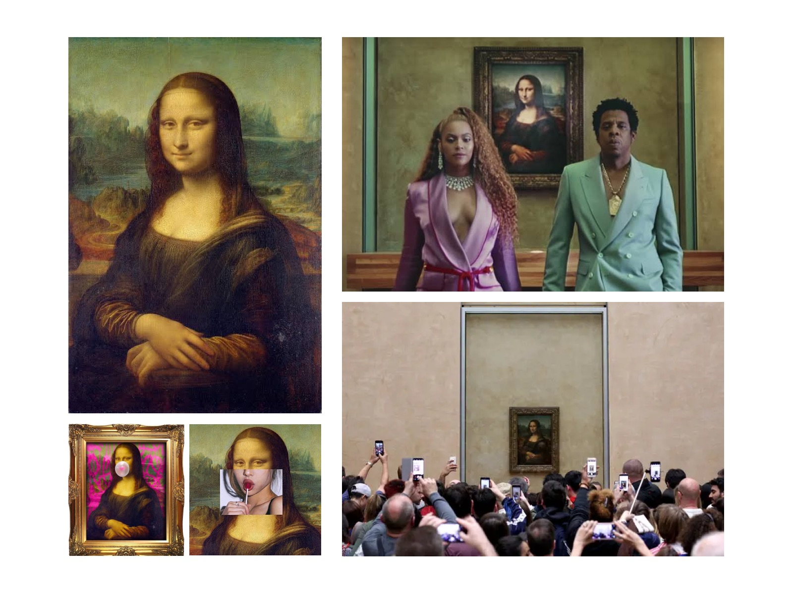
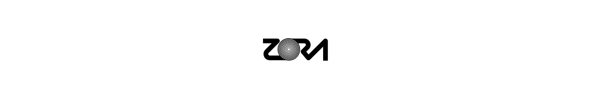

What is Cryptomedia?
Author: Jacob Horne
Cryptomedia = [Hypermedia + Creator + Owner + Market] = Value
Hypermedia is a nonlinear medium of information that includes graphics, audio, video, plain text and hyperlinks.
Cryptomedia is a medium for anyone on the internet to create universally accessible and individually ownable hypermedia.
Cryptomedia is an ownership medium for hypermedia.
Cryptomedia allows for unique and provable ownership of information, including: graphics, audio, video, plain text and any arbitrary file or data.
Cryptomedia can be thought of as hypermedia with built-in property rights.
Cryptomedia is the canonical instance of a piece of hypermedia. It can be thought of as the "original".
Cryptomedia is created using the Zora protocol.
Cryptomedia as Object
A single instance of cryptomedia is a token that has two inseparable components:
- Media
- Market
The media component features the link to the media, the link to metadata for it, an immutable hash for the media and an immutable hash for the metadata. The media linked should be universally free and accessible to the internet. The immutable hashes serve as a tool for the public to verify that both links are pointing to the correct files at any point in time.
The market component features the current owner and the list of all bids on that token. The owner has sole access and control over the bids, and can choose to accept any bid at any time, at which point ownership will transfer to the winning bidder. The current owner may update the links for the token.
A piece of Cryptomedia itself has a creator: the individual and/or entity that minted the cryptomedia and receives a defined portion of every future accepted bid. The creator has the right to burn that token if they own it.
Each piece of Cryptomedia also has a unique and immutable token ID, designated at the time of minting in Zora. IDs are assigned in sequential order.
Although not an explicit part of the Zora protocol, each piece of Cryptomedia has the block number it was created within. This is an important factor which represents the point in time it was created.
Provenance
Cryptomedia has provenance. For the first time we can objectively inspect a piece of media's history on the internet.
Provenance of a piece Cryptomedia can be understood by inspecting its creator, tokenID, blocknumber, the media itself and the history of bids and owners.
Provenance at a higher level can be derived by the public by comparing pieces of cryptomedia to each other. For example, one may discover an earlier version of a piece of media created by a less famous creator, and have the indisputable facts of the blockchain to prove it was in fact earlier.
Characteristics
Additionally, Cryptomedia has the following characteristics:
- Token-based: An Ethereum-based Non-Fungible Token (NFT)
- Permissionless: universally usable and censorship resistant
- Universally accessible: open and available to the internet
- Valuable: accrue value which is accessible to the owner and creator
- Internet-native: created within and exists only on the internet
- Platformless: belonging to no single platform other than itself
- Composable: can be integrated into other contexts and systems
Closing thoughts
Cryptomedia's closest analogue is art in the public domain. Individually owned, but free to share and use by anyone. When it’s freely shared and used it’s not detracting value from the original, it’s adding value. The Mona Lisa is an exceptionally valuable artwork that lives in the public domain, it is individually ownable yet publicly available for reuse. Mona Lisa Instagram posts, poster prints, remixes, reuses all do not detract value from the original, they add value to it.
Cryptomedia means we no longer need to trade off universal accessibility and usage for value capture on the internet. It means that the more the object is shared and user the more valuable it becomes.
Cryptomedia inverts how we think about creating and capturing value on the internet, and provides the foundation for a sovereign internet owned by everyone.
☼☽
References
- "Cryptomedia" was first used on Reddit
- What is Hypertext
- Originality
- Provenance
- EIP721
- Creative Composability
- Public Domain
- Mona Lisa
Zora — Internet Renaissance (2021 - ???) ☼☽
